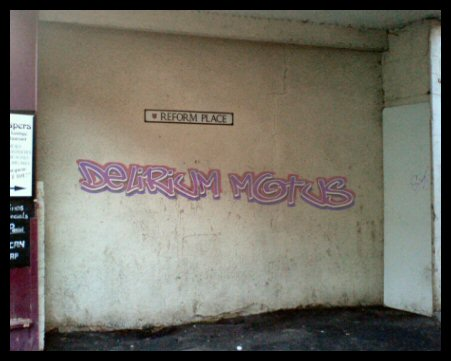

|
RR0018 Reform Place - 2007
|

|
|
(CD Album)
1. Anton's Song (3:14)
2. Change (3:34)
3. Galapagos (3:08)
4. Classic (2:41)
5. Fly (3:52)
6. Mimic (4:32)
7. Lost in Apollo (4:11)
8. Motus Destructus (2:24)
Thanks to Photophobe for the samples used on track 8.
|
|